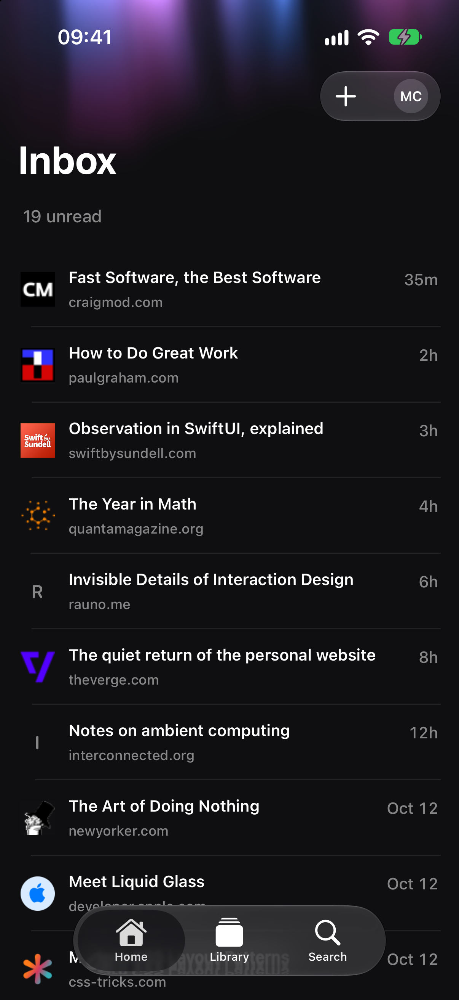
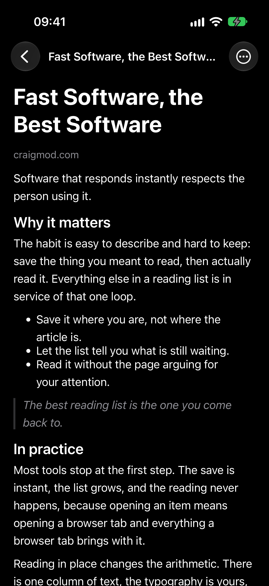
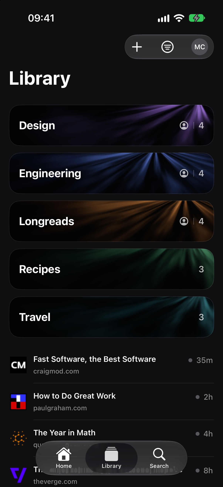
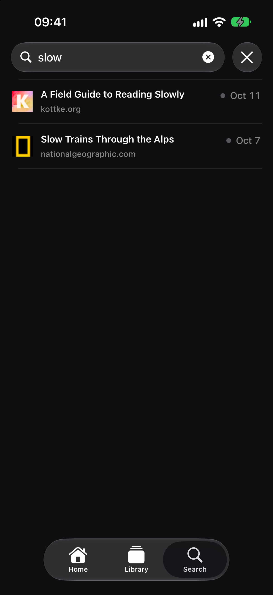

Fast Software, the Best Software
craigmod.com · 35m
Before: the current app in Demo Mode on iPhone 17. After: the dark concept, with the same saves.


Software that responds instantly respects the person using it.
The habit is easy to describe and hard to keep: save the thing you meant to read, then actually read it. Everything else in a reading list is in service of that one loop.
Most tools stop at the first step. The save is instant, the list grows, and the reading never happens.

